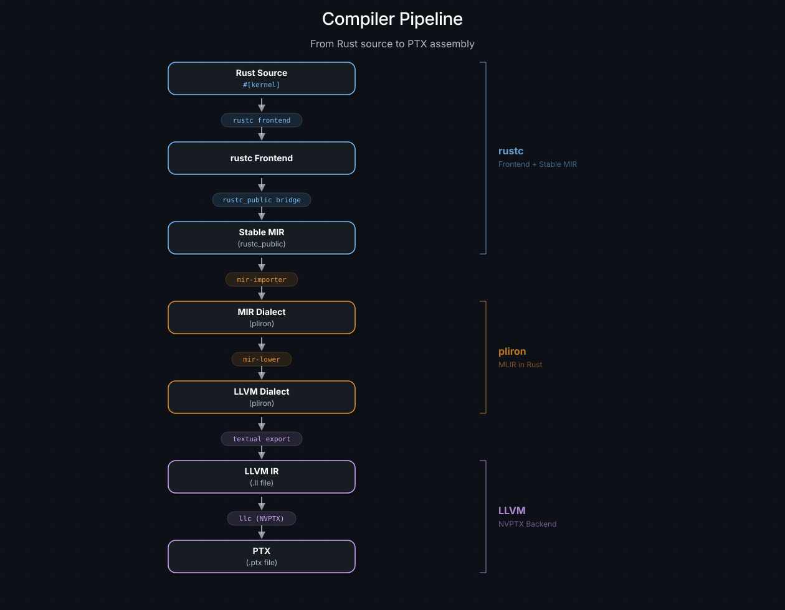
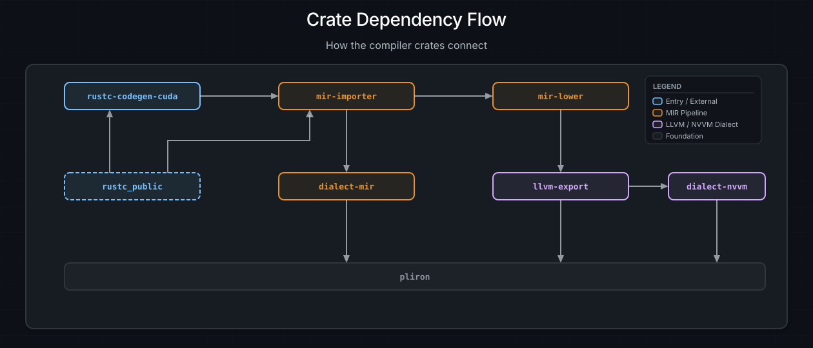
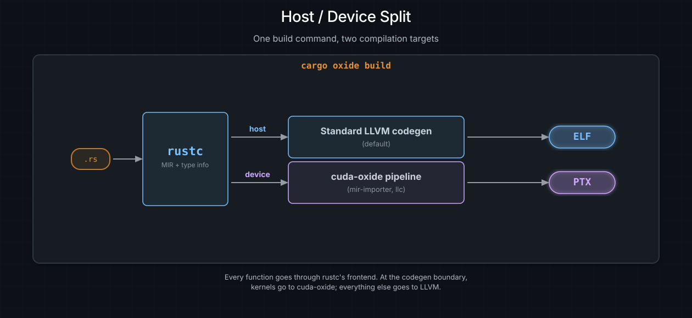

Architecture Overview#
You have written a #[kernel] function in Rust. It type-checks. It
borrow-checks. Now it needs to become PTX that runs on a GPU. This chapter
explains how cuda-oxide gets it there -- every stage, every crate, and the
reasoning behind each choice.
If you just want to write kernels, you never need to read this page. But if you want to hack on the compiler, contribute a pass, or satisfy the "but how does it actually work?" itch, welcome. Grab a coffee.
Design Philosophy#
The guiding principle is short enough to fit on a sticky note:
Use the best tool for each stage -- but own the full pipeline.
Compilers are layer cakes. Each layer has a wildly different job, and different tools excel at each one. cuda-oxide picks the strongest option per stage rather than building everything from scratch:
Frontend:
rustc+rustc_public(Stable MIR). Why rewrite a type checker when one of the best ever built already exists? Rust's compiler handles parsing, name resolution, type inference, borrow checking, trait resolution, monomorphization, and MIR optimization. We take all of that for free.Middle-end:
pliron(Pliron IR, MLIR-like). We need a place to transform Rust MIR into something LLVM-shaped. pliron is an extensible IR framework inspired by LLVM's MLIR, but written in pure Rust. No C++ dependency, no CMake, no tablegen -- justcargo build. We define two custom dialects here (one for MIR, one for NVIDIA GPU intrinsics) and consume the LLVM dialect from the upstreampliron-llvmcrate.Backend: LLVM NVPTX. NVIDIA has poured years of work into the NVPTX backend in LLVM. It knows every register class, every instruction encoding, every scheduling quirk. We emit LLVM IR textually and hand it to
llc. Standing on the shoulders of giants beats reinventing the PTX assembler.
The payoff: the entire compiler is written in Rust (except the final llc
invocation). There are no opaque handoffs to a C++ middle-end. You can set a
breakpoint in any transformation pass, println! your way through the IR, and
run the whole thing under Miri if you feel adventurous. Standard Rust tooling,
all the way down.
备注
llc is the one external binary. The pinned Rust toolchain's llvm-tools
component ships llc with the NVPTX backend enabled, so on a fresh clone
rustup component add llvm-tools (already listed in rust-toolchain.toml)
is the only step needed. A system LLVM 21+ install also works and serves as
the fallback. The CUDA Toolkit alone is not enough — it does not include
llc. All cuda-oxide stages up to LLVM IR emission are implemented in
Rust; after the backend writes the .ll file, it invokes external LLVM
llc to generate PTX.
The Pipeline at a Glance#
Here is the full journey of a #[kernel] function, from source to silicon:
{kind=link}

The full compilation pipeline. Rust source enters the rustc frontend, passes
through Stable MIR, is translated into dialect-mir (with mem2reg promoting
allocas back into SSA), applies annotated loop unrolling, lowers to the LLVM
dialect, exports textual LLVM IR, and finally compiles to PTX.#
Stage by stage:
Rust Source. You write a function, slap
#[kernel]on it, and go about your day. The proc macro renames it into the reservedcuda_oxide_kernel_<hash>_<name>namespace so the backend can spot it later. The exact prefix lives in the workspace-internalreserved-oxide-symbolscrate; the<hash>makes accidental collisions impossible.rustc Frontend. rustc parses, type-checks, borrow-checks, monomorphizes generics, and runs MIR optimization passes (inlining, constant propagation, dead code elimination). All the hard work happens here.
Stable MIR. The codegen backend receives rustc's internal MIR and bridges it to
rustc_public's stable types. This gives us a versioned, stable view of the MIR that won't break on the next nightly.dialect-mir(pliron).mir-importertranslates Stable MIR intodialect-mir-- a pliron dialect that models Rust MIR semantics (places, projections,Rvalue,BinOp, etc.). The initial form uses per-localmir.allocaslots withmir.load/mir.storefor cross-block data flow;pliron::opts::mem2regthen promotes those slots back into SSA values. Compiler optimizations, beginning with annotated loop unrolling, run on that SSA form before lowering.LLVM dialect (pliron-llvm).
mir-lowertransformsdialect-miroperations into LLVM dialect operations:llvm.alloca,llvm.load,llvm.store,llvm.getelementptr,llvm.call, and friends. This is where Rust-level concepts get flattened to machine-oriented IR. The LLVM dialect itself is provided by the upstreampliron-llvmcrate.LLVM IR (.ll file). NVVM builds first use
nvvm-transformsto convert modern LLVM operations to the forms accepted by the selected libNVVM dialect. Ordinary PTX builds skip that transform. Thellvm-exportprinter then writes the textual LLVM IR, which can be inspected or diffed between compiler versions.GPU artifact. Ordinary builds use
llcto compile the.llfile to PTX. NVVM builds use libNVVM and nvJitLink to produce LTOIR and then a cubin.
Crate Map#
cuda-oxide is split into focused crates. Here is every one and its role:
Crate |
Role |
|---|---|
|
Custom rustc codegen backend -- intercepts |
|
Translates Stable MIR into |
|
pliron dialect modeling Rust MIR semantics (places, rvalues, terminators) |
|
Analyzes and optimizes |
|
Converts lowered LLVM operations to the form accepted by the selected NVVM dialect |
|
Re-exports |
|
pliron dialect for NVIDIA GPU intrinsics ( |
|
Lowers |
|
CLI tool: |
|
Device-side API: intrinsics, |
|
Proc macros: |
|
Host-side typed module loading and launch helpers |
|
Safe bindings to the CUDA Driver API ( |
|
Async GPU programming: |
|
Low-level FFI bindings to CUDA driver ( |
Dependency flow#
The compiler crates form a clear pipeline:
{kind=link}

How the compiler crates connect. The pipeline flows left to right through the codegen backend, importer, and lowering passes. Dialect crates sit underneath, all built on pliron.#
pliron sits underneath the dialect crates as the shared IR framework --
it provides the Context, Module, Region, Block, Operation, Type,
and Attribute infrastructure. The LLVM dialect comes from pliron-llvm
(also built on pliron); llvm-export re-exports it and adds the textual .ll
exporter. rustc_public provides the stable MIR types
that mir-importer reads from rustc. The user-facing crates (cuda-device,
cuda-macros, cuda-host, cuda-core, cuda-async) are independent of the
compiler internals and depend only on each other.
The Two Key Dependencies#
Two external projects make cuda-oxide possible. Neither is optional, and both deserve a brief introduction before the deep-dive chapters that follow.
pliron -- Pliron IR (MLIR-like)#
pliron is an extensible compiler IR framework inspired by LLVM's MLIR, but written entirely in Rust. It provides the same core abstractions -- dialects, operations, types, attributes, regions, and blocks -- without requiring a C++ toolchain, CMake, or tablegen.
cuda-oxide chose pliron over upstream MLIR for a pragmatic reason: we wanted
the entire compiler to build with cargo. Depending on MLIR means pulling in
the LLVM monorepo, a C++ build system, and Rust-C++ FFI glue -- all of which
add build complexity, slow down CI, and make contributor onboarding painful.
With pliron, dialects are defined using standard Rust traits and derive macros,
and the IR can be inspected with any Rust debugger.
cuda-oxide defines two dialects on top of pliron: dialect-mir (models
Rust MIR) and dialect-nvvm (NVIDIA GPU intrinsics). The LLVM dialect comes
from the upstream pliron-llvm crate; cuda-oxide's llvm-export crate
re-exports it and adds the textual .ll exporter.
参见
For a deeper dive into pliron's architecture, see Pliron -- MLIR in Rust.
rustc_public -- Stable MIR#
rustc_public (historically known as Stable MIR or stable_mir) is Rust's
official stable interface to the compiler's internals. MIR -- the Mid-level
Intermediate Representation -- is where borrow checking, lifetime validation,
and most optimizations happen. It is also a rich, high-level representation
that retains type information, making it an ideal starting point for a GPU
backend.
The problem: MIR is an internal representation. Its data structures change
between nightly versions with no stability guarantees. A backend that reads
internal MIR directly would break every time rustc refactors a field name or
reorders an enum variant -- which happens more often than you might hope.
rustc_public solves this by providing a versioned, stable API that bridges
internal types to a public surface. cuda-oxide hooks in at the
CodegenBackend::codegen_crate() entry point, bridges internal types to stable
MIR types, and hands the result to mir-importer for translation.
参见
For a deeper dive into rustc_public, see rustc_public -- Stable MIR.
The Host/Device Split#
cuda-oxide is a single-source compiler. Host code and device code live in the
same .rs files, and a single build command compiles both. Here is how that
works, step by step:
1. cargo-oxide invokes rustc with the custom backend.
cargo oxide run vecadd
Under the hood, this sets -Z codegen-backend=librustc_codegen_cuda.so, which
tells rustc to route code generation through cuda-oxide's backend instead of
the default LLVM one.
2. rustc calls codegen_crate() for every crate in the dependency tree.
This is not a cuda-oxide-specific step -- it is how rustc works. For every
crate being compiled (your binary, cuda-device, any other dependency), rustc
invokes the codegen backend.
3. The backend scans for kernel entry points.
It looks for monomorphized functions whose names contain the reserved
cuda_oxide_kernel_<hash>_ prefix. These are the functions that #[kernel]
created.
4. If kernels are found: build the device call graph and emit PTX.
Starting from each kernel, the backend walks the call graph to collect every
device function the kernel transitively calls. This set of functions is handed
to mir-importer, which runs the full pipeline (dialect-mir ->
LLVM dialect -> .ll -> PTX). The result is a .ptx file written next to
the host binary.
5. Always: delegate host code to the standard LLVM backend.
Regardless of whether kernels were found, host code is compiled normally.
cuda-oxide's backend delegates to rustc's default LLVM codegen for everything
that is not device code. Your main() function, your CLI parsing, your async
runtime -- all compiled the usual way.
6. Result: a host binary + a .ptx file, from one build.
target/debug/vecadd ← host binary (loads PTX at runtime)
target/debug/vecadd.ptx ← device code (loaded by CUDA driver)
备注
Device code from dependencies (like cuda-device) is compiled lazily.
Functions from external crates only get compiled to PTX when a kernel in your
crate transitively calls them. The MIR is available from .rlib metadata, so
there is no need to recompile dependencies from source -- the backend reads
their Stable MIR on demand.
A simplified mental model#
{kind=link}

One build command, two compilation targets. Every function goes through rustc's frontend. At the codegen boundary, kernels go to cuda-oxide; everything else goes to LLVM.#
Every function goes through rustc's frontend. At the codegen boundary, the backend looks at each function and asks: "Are you a kernel or called by a kernel?" If yes, you go right (cuda-oxide pipeline). If no, you go left (standard LLVM). Some functions go both ways -- a generic helper used on both host and device will be compiled twice, once per target.
What rustc Gives Us For Free#
One of the nicest things about building on rustc rather than inventing a new
language is the sheer volume of work we do not have to do. Here is what rustc
handles before cuda-oxide ever sees the code:
What |
Value for GPU Code |
|---|---|
Type checking |
Catch errors before GPU compilation -- no cryptic PTX assembler failures |
Lifetime tracking |
Safety guarantees that span the host/device boundary |
Borrow checking |
Enforce ordinary Rust aliasing; GPU-wide writes add |
Monomorphization |
Generics "just work" on the GPU -- |
MIR optimization |
Inlining, constant propagation, dead code elimination -- all applied before we begin |
Trait resolution |
Trait objects are resolved, vtables are gone, everything is static dispatch |
Pattern matching |
|
We do not reimplement any of this. rustc does the heavy lifting, and we pick up the fully optimized, monomorphized, borrow-checked MIR at the end. Our job is "just" the translation -- which, to be fair, is still plenty of work. But it is a dramatically smaller problem than building a GPU language from scratch.
备注
This also means that Rust's error messages work normally. If you make a type
error in a kernel, you get the same helpful rustc diagnostic you would get
in any other Rust code -- complete with suggestions, span highlighting, and
"did you mean?" hints. No separate GPU compiler error format to learn.
Where to Go Next#
The rest of this chapter zooms into each piece of the architecture:
Pliron -- Pliron IR (MLIR-like) -- the IR framework that holds the pipeline together.
rustc_public -- Stable MIR -- how we read MIR without breaking on every nightly.
The Code Generator: rustc-codegen-cuda -- the codegen backend that intercepts rustc.
MIR Importer -- translating Stable MIR into pliron.
Compiler Optimizations -- how
mir-transformsanalyzes and rewritesdialect-mir.Pliron Dialects -- the three custom dialects and their operation sets.
The Lowering Pipeline --
dialect-mirto the LLVM dialect, pass by pass.Adding New Intrinsics -- a contributor's guide to extending the compiler.